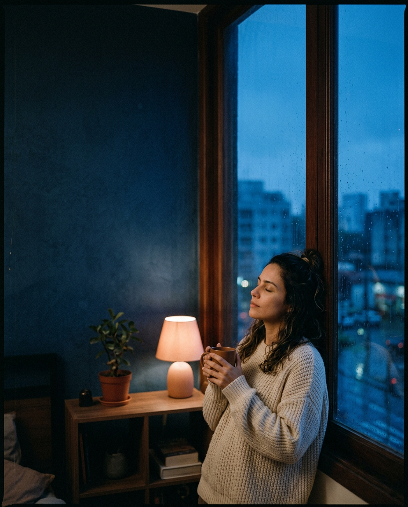
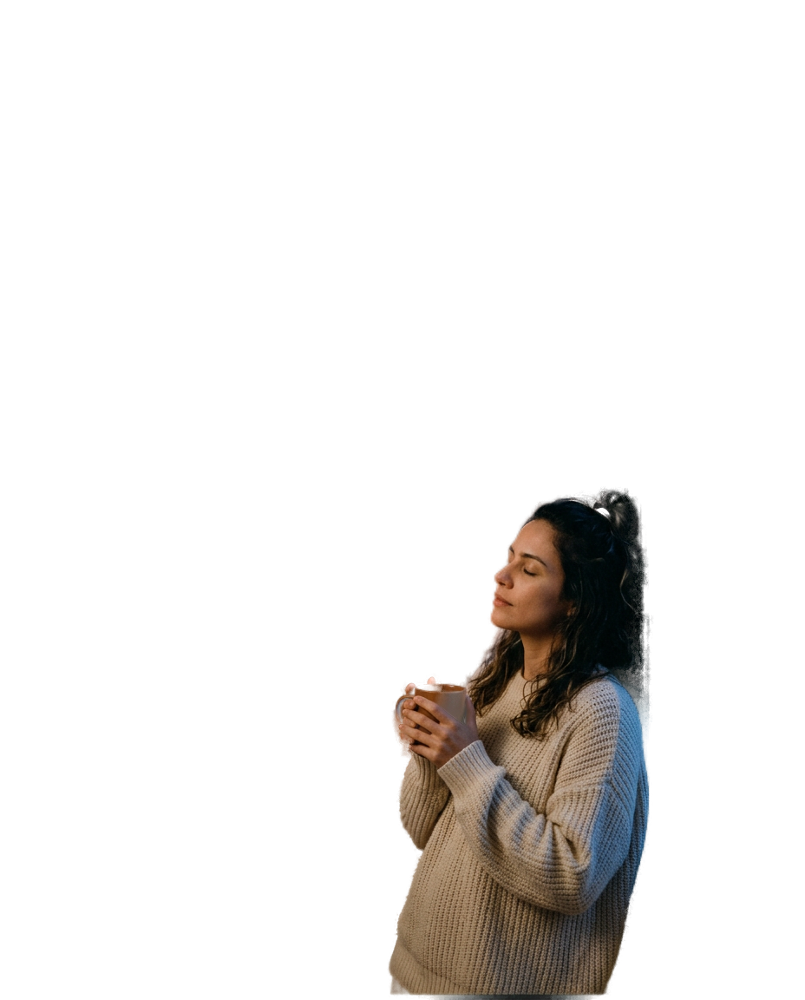

@psi.liamoraes
psicologia clínica
Você não precisa
chegar no
limite

pra começar
terapia.
Terapia também é pausa, prevenção e autoconhecimento.
Arrasta e veja 4 sinais de que pode ser a hora.
lia moraes
arrasta →